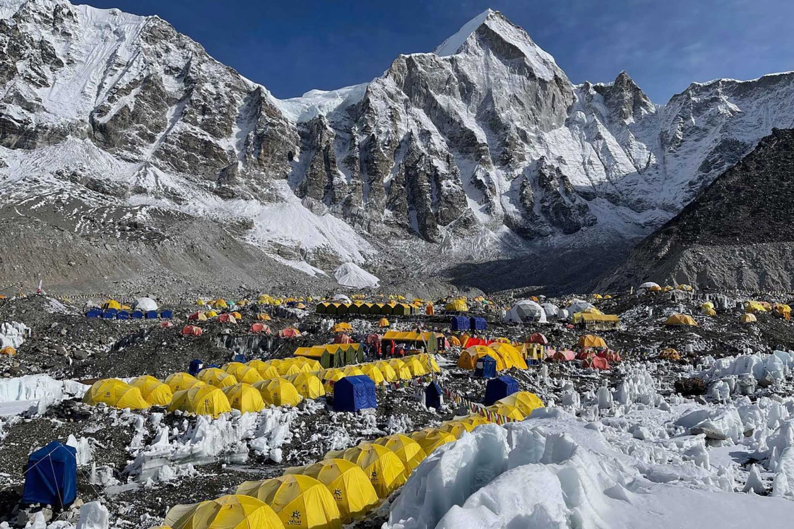
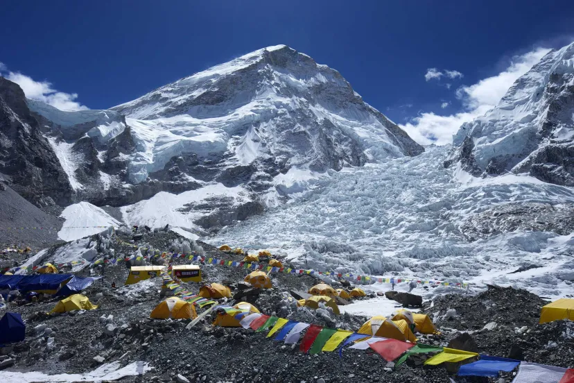
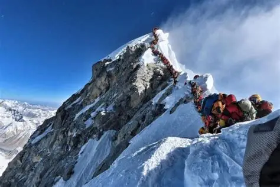
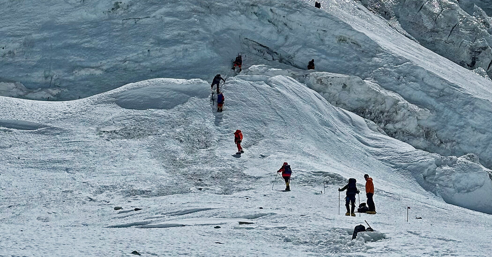
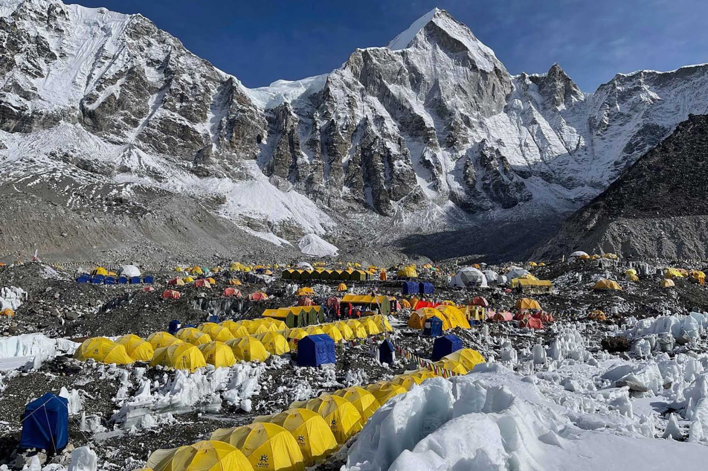
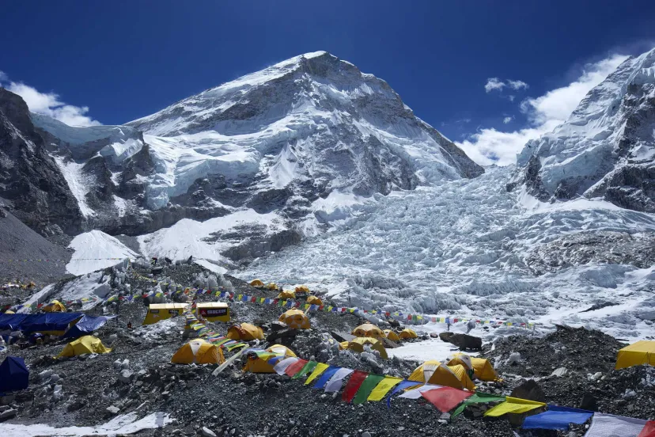
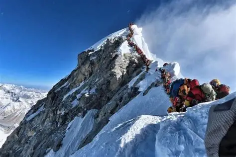
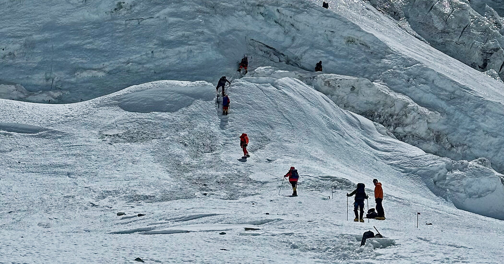

Mt. Everest, known as Sagarmatha in Nepal and Chomolungma in Tibet, is the highest peak in the world, standing at 8,848 meters (29,029 feet). It is one of the most iconic destinations for adventurers and trekkers from all around the globe.
Overview
Located in the Himalayas, the mountain attracts climbers, researchers, and tourists alike. The region is rich in natural beauty, including glaciers, rugged peaks, and diverse wildlife.
Trekking to Everest Base Camp
The trek to Everest Base Camp is a once-in-a-lifetime experience. Trekkers pass through Sherpa villages, Buddhist monasteries, and breathtaking landscapes. The journey typically takes 12–14 days depending on acclimatization and route chosen.
- Best time to trek: March to May and September to November
- Starting point: Lukla Airport
- Key highlights: Namche Bazaar, Tengboche Monastery, Khumbu Glacier
- Required gear: Warm clothing, trekking boots, sleeping bag, trekking poles
Climbing Mt. Everest
Climbing the summit of Everest is challenging and requires significant preparation, permits, and support. It is recommended only for experienced mountaineers. Climbers face extreme altitudes, unpredictable weather, and physical endurance challenges.
The standard climbing route is from the South Col (Nepal side) or the North Col (Tibet side). Both routes require careful acclimatization and teamwork with certified guides.
Interesting Facts
- First successful ascent: Edmund Hillary and Tenzing Norgay in 1953
- Average climbing season: Late April to May
- Home to unique Himalayan flora and fauna
- The base camps serve as acclimatization points and adventure hubs
Whether you are trekking to the base camp or dreaming of reaching the summit, Mt. Everest is a symbol of human determination and the beauty of the Himalayas. Plan your journey carefully, respect the local culture, and embrace the adventure of a lifetime.
 






